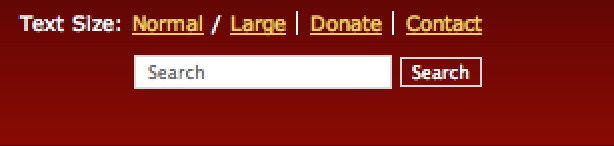
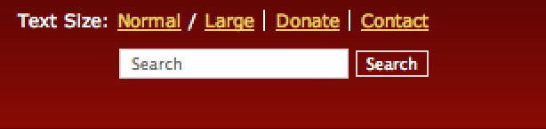

The Power To Serve

The Power To Serve

FreeBSD/ppc Project
Introduction
The FreeBSD/ppc projet pages contain information about the FreeBSD port to the PowerPC architecture. As with the port itself,these pages are still a work in progress
Table Of Contents
- Status
- Latest News
- Port FAQs
- Supported Hardware
- FreeBSD/ppc mailing list
- Known Issues
- Documentation, White Papers, Utilities
- Other links of interest
Status
The FreeBSD/ppc port is still a Tier 2 platform. That means that it is not being fully supported by our security officer, release engineers and toolchain maintainers.
Latest News
- 03 April, 2009:Support for the PowerPC G5 has committed to SVN.
- 03 March, 2008:Support for Freescale PowerQUICC III MPC85XX family system-on-chip development boards has been committed into CVS.
- 27 February, 2008:FreeBSD 7.0 is the first release to officially support the FreeBSD/ppc port.